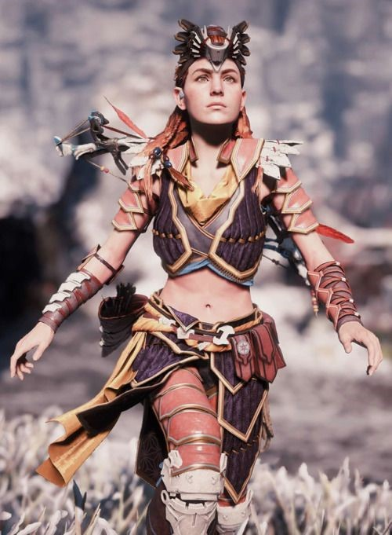

Aloy (Horizon Zero Down 2017)
Guerrilla Games
Aloy est un personnage qui a beaucoup fait parler d’elle en 2017 dans le jeu Horizon Zero Dawn. Elle en devient même un personnage reconnu au même titre que Lara Croft en devenant le nouveau personnage emblématique du féminisme. C’est un personnage qui marque un tournant dans la représentation féminine.

Aloy est d’abord considérée comme la paria de son village, sa vie n’est pas si facile, mais la rouquine n’est pas du genre à se laisser démoraliser par des traditions. Très vite, la jeune femme va se défaire de son statut de paria pour devenir une référence. Les gens feront appel à elle pour les aider, et la reconnaîtront avant même qu’elle se soit présentée, de par sa réputation. Aloy est un personnage qui a grandi seule, de ce fait elle a un sale caractère avec des choix de dialogue tout aussi durs.
Elle est emblématique du féminisme car c’est une femme très sure d’elle, courageuse mais surtout indépendante dont la notoriété et la force ne dépend pas d’un homme mais d’elle-même.